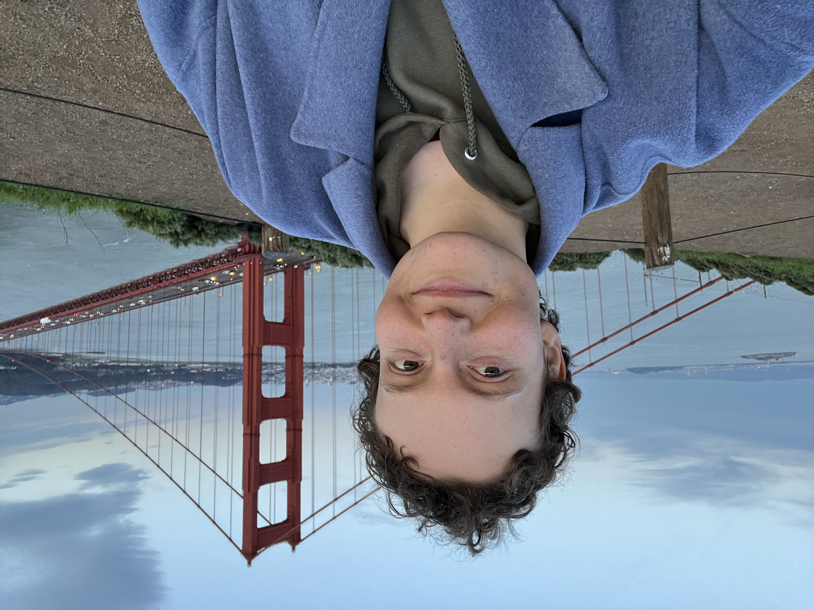
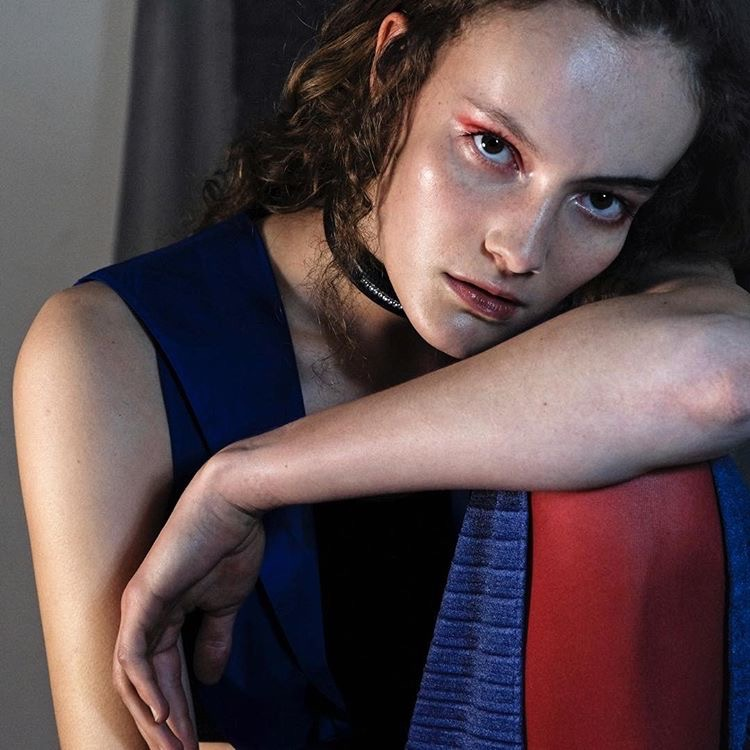
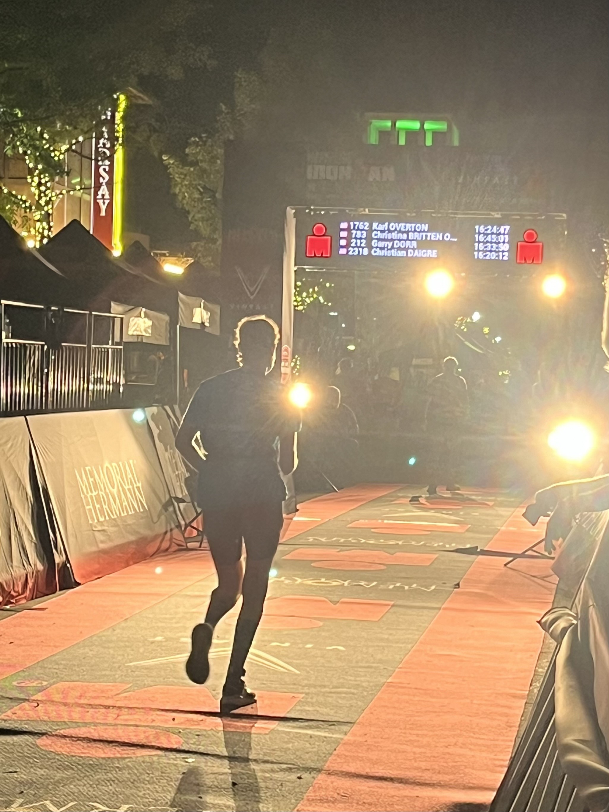
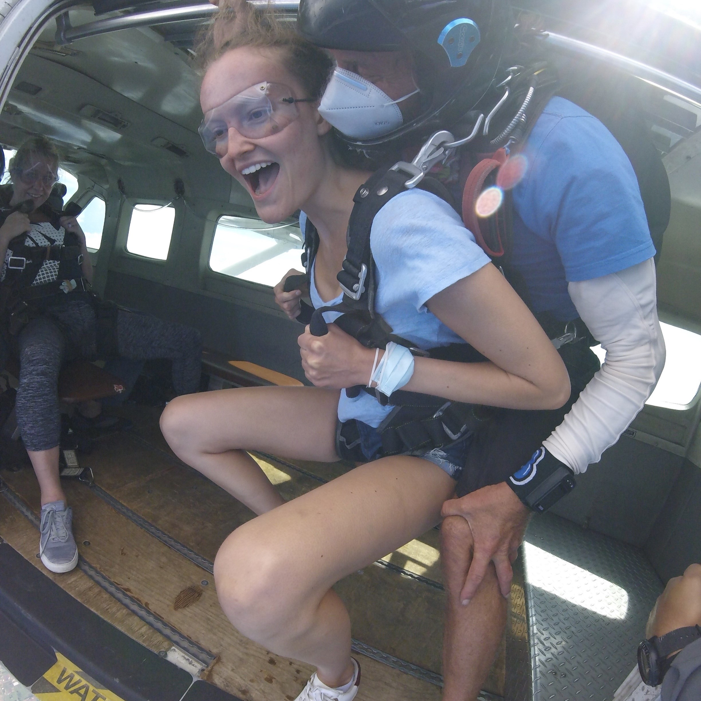

Hi! I lead the Vessel team at at Science and do Ironman triathlon.
Vessel is building advanced life support systems for critical care.
Previously, I did BCI research at Founders Fund and studied biology at Yale.
My long term ambition is to build perfect empathy: a way to literally feel what someone else is feeling. I am currently 4% of the way there.
I got into endurance sport because doctors told me I wouldn't be able to run (I have a congenital heart defect).
In 8 months I went from no endurance ability to qualifying for Ironman World Championships. I raced in Kona, Hawaii, on October 11th, 2025. In 2026, I'm racing Ironman Lake Placid and Ironman California.
I shaved my head as a social experiment, only listen to hardcore EDM, regularly polar plunge, and in general pursue the extremes of the human experience.
I speak 5 languages fluently and have lived in 7 countries.
Only dead fish go with the flow.
PS: If you are new to BCIs and want to learn more, start here.